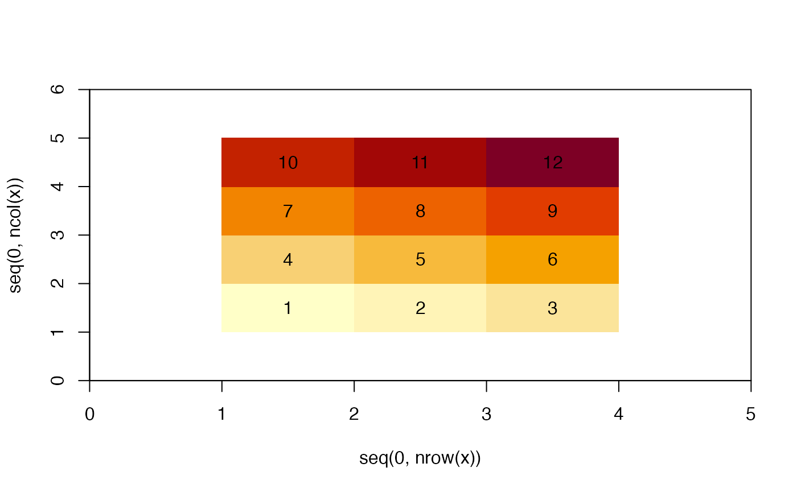

(m <- matrix(1:12, 3))
#> [,1] [,2] [,3] [,4]
#> [1,] 1 4 7 10
#> [2,] 2 5 8 11
#> [3,] 3 6 9 12
tl(m)
#> [,1] [,2] [,3] [,4] [,5]
#> [1,] NA 1 4 7 10
#> [2,] NA 2 5 8 11
#> [3,] NA 3 6 9 12
#> [4,] NA NA NA NA NA
tr(m)
#> [,1] [,2] [,3] [,4] [,5]
#> [1,] 1 4 7 10 NA
#> [2,] 2 5 8 11 NA
#> [3,] 3 6 9 12 NA
#> [4,] NA NA NA NA NA
bl(m)
#> [,1] [,2] [,3] [,4] [,5]
#> [1,] NA NA NA NA NA
#> [2,] NA 1 4 7 10
#> [3,] NA 2 5 8 11
#> [4,] NA 3 6 9 12
br(m)
#> [,1] [,2] [,3] [,4] [,5]
#> [1,] NA NA NA NA NA
#> [2,] 1 4 7 10 NA
#> [3,] 2 5 8 11 NA
#> [4,] 3 6 9 12 NA
tl(br(m))
#> [,1] [,2] [,3] [,4] [,5] [,6]
#> [1,] NA NA NA NA NA NA
#> [2,] NA 1 4 7 10 NA
#> [3,] NA 2 5 8 11 NA
#> [4,] NA 3 6 9 12 NA
#> [5,] NA NA NA NA NA NA
image0(tl(br(m)))
text0(tl(br(m)))
n <- 8
nbr <- 2
line <- seq(-nbr, nbr)
line + n
#> [1] 6 7 8 9 10
## we have values 1:12
## if we want the topleft neighbour in a *corner* orientation
matrix(c(tl(m), tr(m), bl(m), br(m)), ncol = 4L)
#> [,1] [,2] [,3] [,4]
#> [1,] NA 1 NA NA
#> [2,] NA 2 NA 1
#> [3,] NA 3 NA 2
#> [4,] NA NA NA 3
#> [5,] 1 4 NA NA
#> [6,] 2 5 1 4
#> [7,] 3 6 2 5
#> [8,] NA NA 3 6
#> [9,] 4 7 NA NA
#> [10,] 5 8 4 7
#> [11,] 6 9 5 8
#> [12,] NA NA 6 9
#> [13,] 7 10 NA NA
#> [14,] 8 11 7 10
#> [15,] 9 12 8 11
#> [16,] NA NA 9 12
#> [17,] 10 NA NA NA
#> [18,] 11 NA 10 NA
#> [19,] 12 NA 11 NA
#> [20,] NA NA 12 NA
## see that the topleft corner of 1 (find 1 in the first column, row 4)
# has values 1 and 4 (there's no column to their left)
## the topleft corner of 5 has values 4, 5, 7, 8 (row 10 in the print out)This is cool because we can get the row mean for each value in the original matrix and apply that to the corner. This is better than what quadmesh originally did to create corner values.
Now, we want queen’s case neighbours.
For 5, we need 1, 4, 7, 8, 9, 6, 3, 2, and first we note that 8 4, 7 are the topleft corner (we don’t want the value we are, 5 - yet), so that means the other values for this cell are the topright of 5 (8, 9, 6), the botright of 5 (6, 3, 2), and bottomleft of 5 (2, 4, 1).
5
4, 7, 8 - row 10 6, 8, 9 - row 11 2, 3, 6 - row 7 1, 2, 4 - row 6
8
7, 10, 11 - row 14 9, 11, 12 - row 15 5, 6, 9 - row 11 4, 5, 7 - row 10
TBD